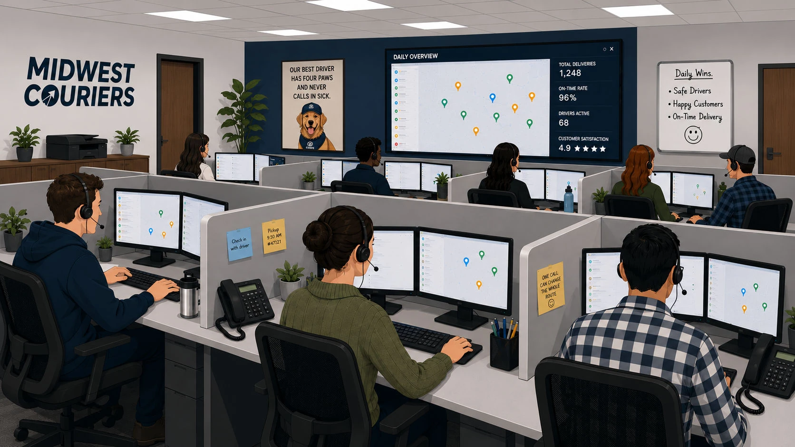
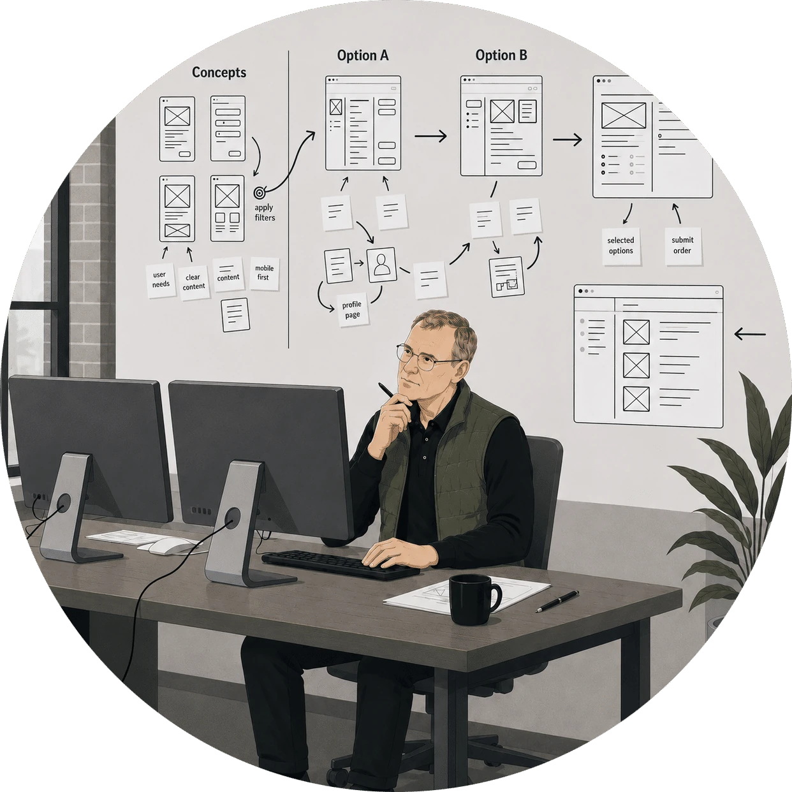
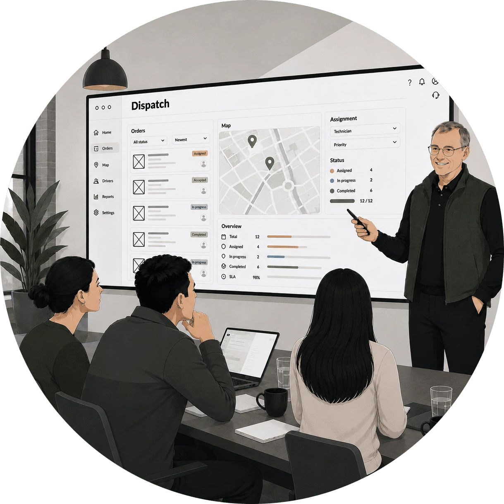
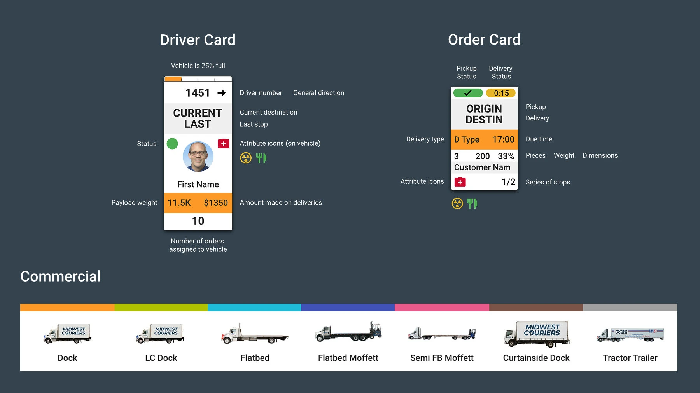
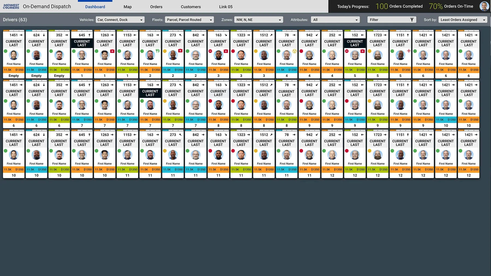
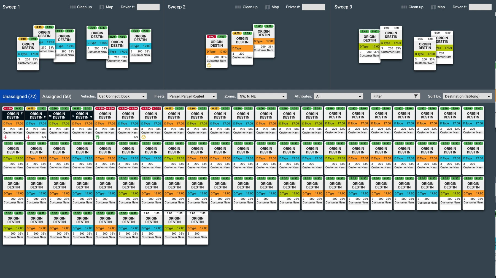
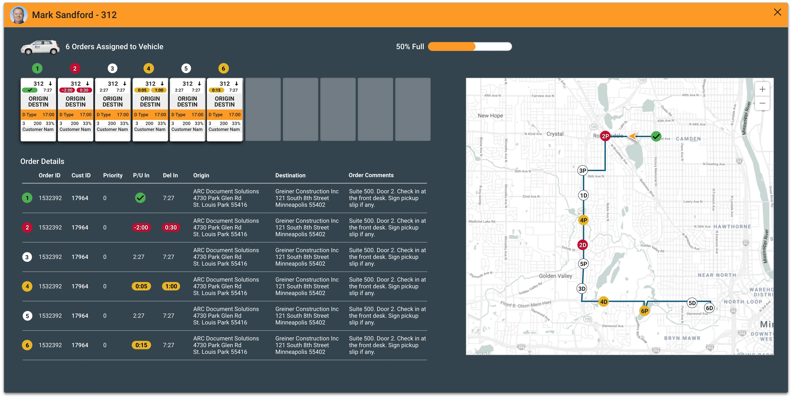

Case study · 3 min read
One real-time view of a 450+ truck fleet
I assumed the answer was a map. I had not asked anyone who does the job.
- Client
- Midwest Couriers
- My role
- Lead product design consultant
- Timeline
- 3 months
- What changed
- A dual-monitor cockpit in place of the legacy tools

Overview
The problem
Midwest Couriers runs 450+ vehicles, and each dispatcher manages 50 active drivers at once, deciding by the second. The judgment calls had outgrown the old tools, and the dispatchers were absorbing the stress the system couldn’t handle.
The solution
I first designed around a map. Watching dispatchers work showed they knew every location by heart and lost their time scanning long lists, so I built the “cockpit” around dense, sortable cards across two screens. Board-clearing time fell by roughly 30%.
My part
I did the research on the floor and designed the cockpit, from the first map concept to the cards and the two-screen layout. The client’s developers built it, and the CEO and management team set priorities.
My approach
Research-led product design for a real-time operations floor
I worked directly with the CEO, management team, and the dispatchers themselves. I wanted to learn the job before redesigning the tool.


First instinct: a map-based view
My mind went straight to maps. That’s how I would have found my way around the job, so I assumed the dispatchers would too. Then I sat with them and watched them work, and the assumption fell apart fast.

- Clustered pins show where the orders are piling up
- Color tells pickups apart from drop-offs
- Orders shown relative to each other
Pivoting to scannable cards
They didn’t need a map. They knew every location code by heart. What slowed them down was scanning endless lists, so they needed dense cards they could sort, stack, and work through at the speed of their expertise.
The map didn’t disappear. It moved inside the driver detail, where the question is one route at a time and seeing it drawn is faster than reading it.

- The driver card stacks live location, status, and how full the truck is
- The order card fits addresses and time windows into one tile
- Small icons replace wordy labels, so more fits and still reads
Left screen: active drivers

- A grid showing which drivers are out and what they’re doing right now
- Each card carries the driver’s ID, current load count, and earnings
- Filters to sort the fleet by vehicle type, zone, or anything else
Right screen: active orders

- Dispatchers group orders into “sweeps” to build a route before assigning it
- The lower panel holds every unassigned order, with filters
- Orders drag straight from the queue into a sweep
Driver detail, where the map moved

- The overlay shows how full the truck is and what’s already assigned
- A detailed list of every order, with its priority and time window
- A map plots the whole route in order
The impact
How I measured this
How each figure above was counted, over what period, and what it cannot tell you.
- Board-clearing time, roughly 30%
- From the dispatch system’s own timestamps: when an order entered the unassigned queue and when it was assigned. I compared the median time to clear the board at the start of each dispatch cycle over four weeks of weekdays before launch and four weeks after. Order volume was similar in both periods, and a holiday week was left out.
- Wrong-vehicle dispatches, roughly a quarter fewer
- Counted from the reassignments the operations manager logged as the wrong vehicle type, from the same log before and after launch, over the same eight weeks. The counts are small, so the direction is more trustworthy than the exact size.
- Post-launch survey
- A short anonymous survey of the dispatch team about a month after launch, asking whether they felt in control during peak hours. “Most” means most of the people who answered, not the whole floor, and it is self-reported: the softest figure here.
A dense screen isn’t a problem when it’s organized well.